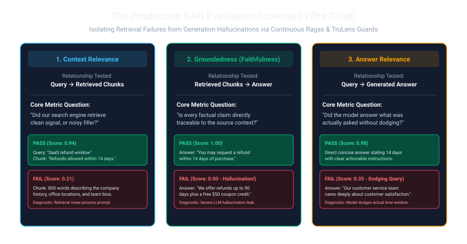
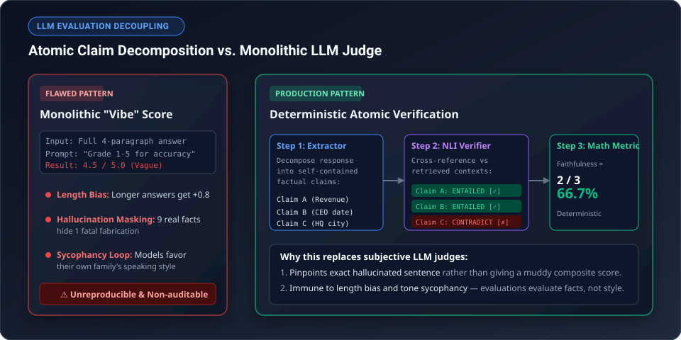

1. The "Vibes-Based" Evaluation Trap
When engineers first build a RAG prototype, evaluation usually consists of 5 teammates sitting around a laptop, typing questions like "What is our parental leave policy?", and nodding when a clean paragraph appears. "Looks awesome, let's ship it!"
We call this "Vibes-Based Engineering" — and it is the single most common reason AI projects stall before production.
Why? Because information retrieval is fundamentally non-linear. You tweak your chunk size from 512 to 256 tokens to make your chatbot snappier. Suddenly, customer support queries improve by 10%, but your complex engineering documentation queries silently degrade by 35% because long code blocks are now split in half. Without automated metrics, you won't notice until your customers start complaining.

Think of a RAG pipeline as a high-stakes court trial:
- The Detective (Retriever): Gathers evidence files from the archives. Did the detective find the real murder weapon (Context Recall), or just bring 10 bags of irrelevant office trash (Context Precision)?
- The Witness (Generator LLM): Testifies in front of the judge based strictly on the evidence bags. Did the witness stick to the evidence (Faithfulness), or invent a fictional backstory out of thin air (Hallucination)?
- The Answer: Did the testimony actually address the attorney's specific question (Answer Relevance)?
2. The 3 Core Evaluation Dimensions
A robust evaluation framework separates the Retriever from the Generator. Scoring both together as a single black box makes root-cause debugging impossible.
| Dimension | Component Judged | Core Question | Target Score |
|---|---|---|---|
| Context Relevance (Precision) | Retriever | Are all retrieved passages strictly necessary to answer the question? | ≥ 0.85 |
| Context Recall | Retriever | Did the search locate all ground-truth facts necessary to formulate a complete answer? | ≥ 0.90 |
| Faithfulness (Groundedness) | Generator | Can every factual claim in the generated answer be traced to the retrieved passages? | ≥ 0.98 |
| Answer Relevance | Generator | Does the answer directly address the user's explicit intent without rambling? | ≥ 0.90 |

3. Classical IR Metrics: Hit Rate, MRR, and NDCG@10
Before involving an expensive LLM judge, you should measure your retrieval engine using deterministic mathematical formulas against a golden dataset of query-passage pairs.
A. Hit Rate @ K
The simplest metric: what percentage of queries successfully contain at least one ground-truth relevant document in the Top $K$ results?
B. Mean Reciprocal Rank (MRR)
Hit Rate ignores where the correct document landed. If the correct document is at rank #1, that is vastly better than rank #10. MRR rewards higher rank placement:
C. Normalized Discounted Cumulative Gain (NDCG@K)
When queries have multiple relevant passages with graduated relevance (e.g., highly relevant = 3, marginally relevant = 1, irrelevant = 0), NDCG@K is the gold standard used by major search engines:
Think of NDCG like the famous "fold" on Google Search. When you search online, the #1 link gets roughly 30% of all clicks, while result #10 gets less than 2%. People simply don't read to the bottom. NDCG mathematically mirrors this human psychology: it applies a logarithmic discount penalty ($1 / \log_2(\text{rank} + 1)$) to every result down the list. Finding the right answer at position #1 earns maximum points; burying that exact same answer at position #9 is penalized as near-total failure.
Suppose our search engine retrieves 3 documents with graded ground-truth relevance $[3, 0, 2]$:
- Rank 1 ($\text{rel}=3$): Gain = $(2^3 - 1) / \log_2(1+1) = 7 / 1.0 = \mathbf{7.000}$
- Rank 2 ($\text{rel}=0$): Gain = $(2^0 - 1) / \log_2(2+1) = 0 / 1.585 = \mathbf{0.000}$
- Rank 3 ($\text{rel}=2$): Gain = $(2^2 - 1) / \log_2(3+1) = 3 / 2.0 = \mathbf{1.500}$
- Actual DCG@3: $7.000 + 0.000 + 1.500 = \mathbf{8.500}$
Now compute the Ideal Ranking (IDCG@3) where documents are sorted perfectly $[3, 2, 0]$:
- Rank 1 ($\text{rel}=3$): $7.000$
- Rank 2 ($\text{rel}=2$): $(2^2 - 1) / \log_2(3) = 3 / 1.585 = 1.893$
- Rank 3 ($\text{rel}=0$): $0.000$
- Ideal IDCG@3: $7.000 + 1.893 + 0 = \mathbf{8.893}$
Final NDCG@3: $\text{DCG} / \text{IDCG} = 8.500 / 8.893 = \mathbf{0.9558}$ (95.6% of theoretical perfection).
import math
from typing import List, Set
def compute_mrr(retrieved_ids: List[str], ground_truth_ids: Set[str]) -> float:
"""Computes Reciprocal Rank for a single query."""
for rank, doc_id in enumerate(retrieved_ids, start=1):
if doc_id in ground_truth_ids:
return 1.0 / rank
return 0.0
def compute_ndcg_at_k(retrieved_ids: List[str], relevance_scores: dict, k: int = 10) -> float:
"""Computes Normalized Discounted Cumulative Gain at rank K."""
top_k = retrieved_ids[:k]
dcg = sum(
(2 ** relevance_scores.get(doc_id, 0) - 1) / math.log2(idx + 2)
for idx, doc_id in enumerate(top_k)
)
# Ideal ranking (sorted by true relevance descending)
ideal_scores = sorted(relevance_scores.values(), reverse=True)[:k]
idcg = sum(
(2 ** score - 1) / math.log2(idx + 2)
for idx, score in enumerate(ideal_scores)
)
return dcg / idcg if idcg > 0 else 0.0
4. Calibrated LLM-as-a-Judge for Generation Rigor
To evaluate Faithfulness automatically without human annotation, we instruct a high-capability judge model (e.g. Gemini 2.0 Flash) to decompose the generated response into atomic factual claims, and verify each claim individually against the context.
Asking an LLM to evaluate its own responses by subjective prompt is like asking a student to grade their own exam with a red pen. If you ask "Did you write a good answer?", they will naturally give themselves an A+. In AI, this is known as LLM judge sycophancy and verbosity bias — models systematically favor long, eloquent answers and responses produced by their own model family.

LLM judges suffer from 3 notorious biases:
- Position Bias: Favoring documents presented at the beginning or end of context.
- Verbosity Bias: Giving higher scores to longer, fluffier responses.
- Self-Preference: Giving higher scores to responses produced by the same model family.
The Fix: Never ask for a subjective 1–5 score. Force the judge into a binary breakdown:
1) Extract atomic statements: ["Claim 1", "Claim 2", ...].
2) For each statement, output strictly VERIFIED (cite passage span) or UNVERIFIED.
3) Faithfulness = $\frac{|\text{VERIFIED}|}{|\text{TOTAL CLAIMS}|}$.
from pydantic import BaseModel, Field
from typing import List, Literal
class ClaimVerification(BaseModel):
claim_text: str = Field(description="Single, self-contained atomic factual assertion.")
verdict: Literal["VERIFIED", "CONTRADICTED", "UNSUPPORTED"]
evidence_citation: str = Field(description="Exact verbatim sentence span from context supporting the verdict.")
class EvaluationReport(BaseModel):
claims: List[ClaimVerification]
@property
def faithfulness_score(self) -> float:
if not self.claims:
return 1.0
verified_count = sum(1 for c in self.claims if c.verdict == "VERIFIED")
return verified_count / len(self.claims)
5. Integrating Evaluation into CI/CD Gates
Every time a developer changes chunk size, embedding models, prompt templates, or vector distance metrics, run an automated regression test suite before merging:
- Regression Threshold: Fail build if Mean MRR drops by more than 0.02.
- Zero Hallucination Gate: Fail build if Faithfulness on critical security/compliance golden questions is below 1.0.
- Cost Gate: Fail build if P95 context token count exceeds 3,500 tokens.